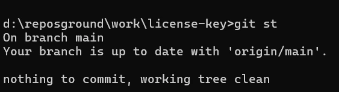
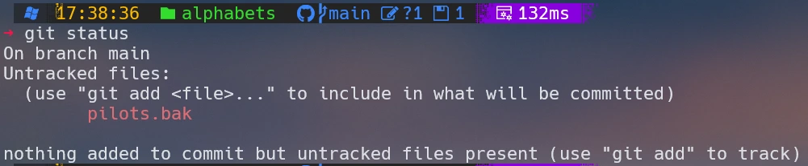

Veja como uma simples personalização com Oh My Posh pode elevar a produtividade, melhorar a leitura e deixar seu ambiente de desenvolvimento muito mais agradável.
Ver Comparação CompletaPersonalizar o terminal não é apenas uma questão estética — é uma forma de tornar o ambiente de trabalho mais eficiente, claro e agradável. A seguir, apresentamos uma comparação direta entre o terminal padrão e o terminal customizado com Oh My Posh, destacando como essa mudança simples pode melhorar significativamente a experiência de desenvolvimento.

O terminal tradicional do Windows cumpre sua função, mas oferece pouca informação visual. Sem cores, sem indicadores de status e sem contexto sobre o repositório Git, ele exige mais esforço para interpretar o estado atual do projeto.

Com Oh My Posh, o terminal ganha vida: cores, ícones, informações úteis e um layout moderno que facilita o trabalho diário. A leitura fica mais clara, o status do Git aparece automaticamente e o ambiente se torna muito mais agradável.
| Benefício | Descrição |
|---|---|
| Produtividade | Informações essenciais aparecem automaticamente no prompt. |
| Clareza | Cores e ícones facilitam a leitura e reduzem erros. |
| Estética | Um ambiente mais agradável melhora a experiência de uso. |
| Profissionalismo | Ideal para apresentações, gravações e documentação. |
Tanto Oh My Posh quanto Starship usam ícones especiais. Para que eles apareçam corretamente, você precisa instalar uma Nerd Font.
Recomendamos a fonte Caskaydia Cove Nerd Font.
winget install NerdFonts.CaskaydiaCoveDepois, abra o Windows Terminal → Configurações → Aparência → Fonte → selecione a Nerd Font instalada.
O Oh My Posh é um dos prompts mais completos e bonitos disponíveis para Windows.
winget install JanDeDobbeleer.OhMyPosh -s wingetEdite seu perfil do PowerShell:
notepad $PROFILEAdicione esta linha:
oh-my-posh init pwsh --config "$env:POSH_THEMES_PATH\paradox.omp.json" | Invoke-ExpressionSalve e abra um novo terminal.
O Starship é rápido, leve e funciona em qualquer sistema operacional.
winget install Starship.Starshipnotepad $PROFILEAdicione:
Invoke-Expression (&starship init powershell)Você pode testar outros temas com:
oh-my-posh config listCom o terminal customizado, você terá uma experiência muito mais fluida e profissional ao longo do curso.